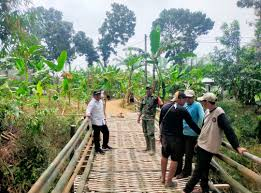
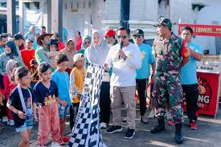

Profil Desa dan Masa Kecil
Saya dilahirkan Desa Pelemgede, Kecamatan Pucakwangi, Kabupaten Pati. Desa Pelemgede terletak di ujung tenggara kecamatan, dikelilingi hamparan sawah hijau, kebun yang subur, dan suasana pedesaan yang tenang. Kehidupan masyarakatnya sederhana, tetapi kental dengan nilai kebersamaan dan gotong royong.
Masa kecilnya dihabiskan dengan penuh keceriaan. Selain rajin belajar, Setyo Budi sangat gemar bermain sepak bola bersama teman-teman sebaya. Lapangan desa menjadi tempat favoritnya. Hampir setiap sore, selepas pulang sekolah, ia berlari di tanah lapang berdebu menggunakan bola seadanya, bahkan kadang hanya bola plastik atau gulungan kertas yang diikat.
Informasi detail tentang desa Pelemgede silahkan
disini.
Kembali ke Atas
Tradisi dan Gotong Royong
Sejak kecil pula, ia menyaksikan bagaimana masyarakat Pelemgede memelihara tradisi dan kebersamaan. Salah satu tradisi yang masih terjaga adalah Sedekah Bumi dan Karnaval Gunungan Hasil Bumi, di mana warga membuat gunungan hasil panen lalu diarak keliling desa sebagai wujud syukur kepada Tuhan.
Selain itu, ketika desa menghadapi bencana, seperti jembatan yang ambrol akibat banjir, warga dengan semangat gotong royong membangun jembatan darurat dari bambu agar anak-anak tetap bisa bersekolah. Semua pengalaman tersebut menumbuhkan kesadaran dalam dirinya tentang arti persaudaraan, solidaritas, dan kepedulian.
Kembali ke Atas
Pendidikan
Perjalanan pendidikannya dimulai dari SDN Pelemgede 03, dilanjutkan ke SMPN Pucakwangi 01, kemudian masuk ke SMAN Jakenan dan pindah ke SMA Negeri 1 Timika, Papua. Setelah lulus SMA, ia melanjutkan pendidikan ke STMIK Dian Nuswantoro pada program Diploma 3 Manajemen Informatika, lalu melanjutkan ke jenjang Sarjana Sistem Informasi di Universitas Dian Nuswantoro (Udinus). Tidak berhenti di situ, semangat belajarnya terus berlanjut hingga berhasil meraih Magister Teknik Informatika di kampus yang sama.
Kembali ke Atas
Karir
Semua perjuangan itu akhirnya mengantarkan Setyo Budi pada profesi yang ia jalani hingga kini, yaitu sebagai Dosen Sistem Informasi di Universitas Dian Nuswantoro Semarang. Dalam perannya sebagai pendidik, ia tidak hanya menyampaikan ilmu pengetahuan, tetapi juga menanamkan nilai-nilai yang ia dapat sejak kecil: kerja keras, kesederhanaan, sportivitas, kebersamaan, dan kepedulian sosial.
Kembali ke Atas
Galeri Desa
Kini, Setyo Budi menjadi contoh nyata bagaimana seorang anak desa dapat tumbuh, berjuang, dan sukses menjadi seorang akademisi. Ia tetap membawa semangat desa Pelemgede yang membentuk karakter hidupnya.
Ini salah satu foto kegiatan warga Desa Pelemgede:
Kembali ke Atas
| Foto 1 | Foto 2 |  |  | Sumber : https://www.seputarmuria.com |
|---|
Hobi
- Belajar
- Membaca
- Bersepeda
Keahlian
- Web Development
- Membaca
- Bersepeda